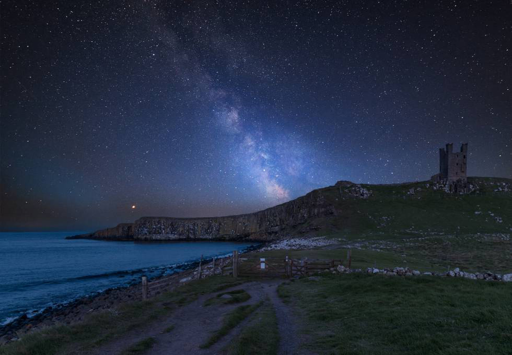
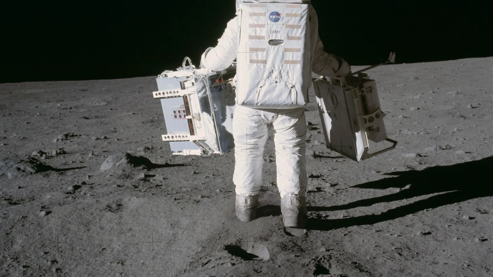
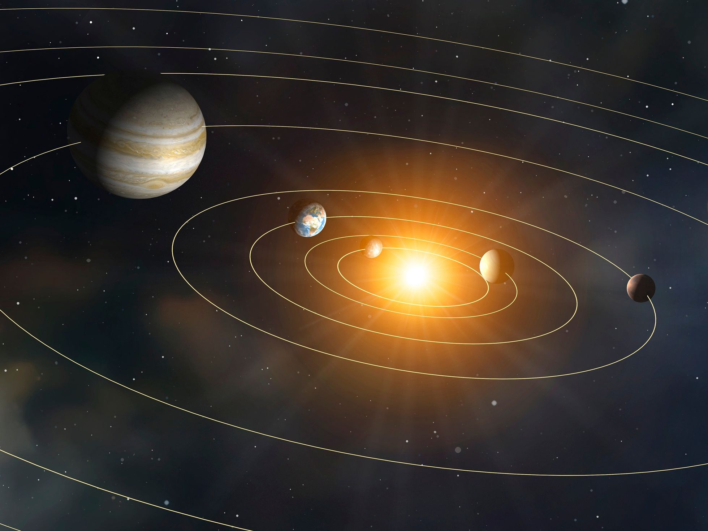
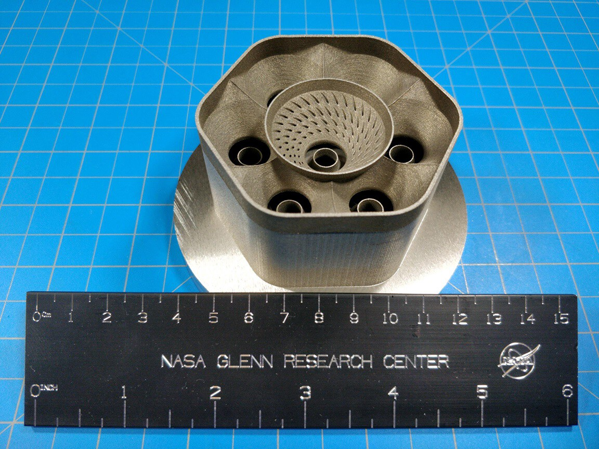
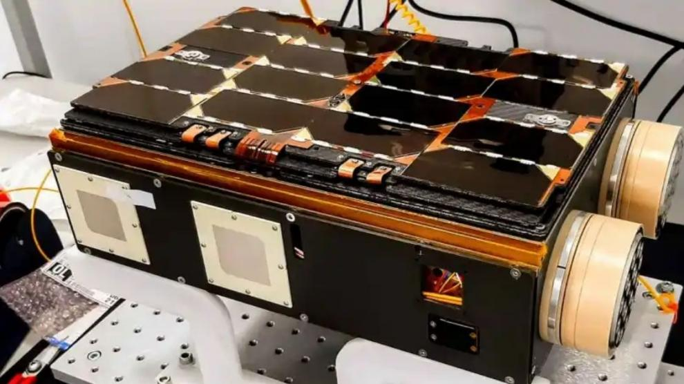
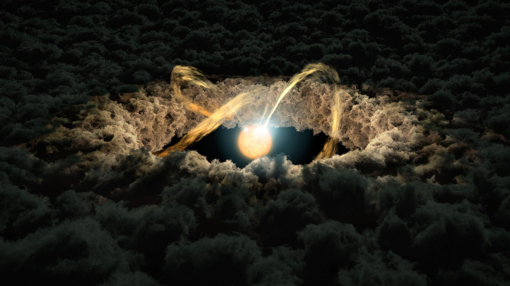
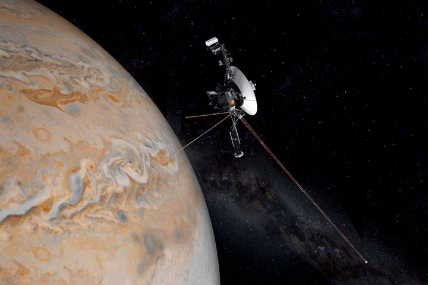

Guardian1: SpaceX lanza hoy al espacio este satélite español para obtener imágenes térmicas de la Tierra
Lunes, 31 de enero de 2022
Pablo G. Pérez González

La Vía Láctea visible de noche cerca del castillo de Dunstanburgh Castle, en la costa de Northumberland (Inglaterra)
Esta es la historia de dos hermanas gemelas, Iris y Hera, prácticamente idénticas al nacer. Nuestra historia es distópica en cierto sentido, negativa para nuestros estándares de hoy: el destino de las dos gemelas fue separarse desde muy pequeñitas e ir a parar a lugares extremadamente remotos el uno del otro. Unos meses antes de cumplir 3 años, a Iris, que echaba de menos a su hermana, pero desconocía dónde se encontraba, le hicieron una foto, sacaron múltiples copias y las mandaron en todas direcciones, con la esperanza de que alguna de ellas diera con su hermana. Hera hizo algo similar, por algo eran como dos gotas de agua, idénticas hasta en sus pensamientos. Teniendo en cuenta que cada una no sabía del paradero de la otra, esas cartas viajaron mucho tiempo, sin llegar a su destinataria, era improbable.
Un día, Hera, que ya contaba con 90 años a sus espaldas, recibió una carta, la abrió y encontró una foto dentro. Vio la foto, y le recordó a algo. La comparó con una suya, y se reconoció a sí misma de cuando solo tenía 3 años. ¡Era una foto de Iris, su hermana gemela separada de ella hacía casi una vida entera! ¿Dónde estaría su hermana Iris ahora mismo? ¿Qué aspecto tendría? ¿Habría tenido amigas, se habría casado y formado una familia como ella? A Hera le gustaba pensar que la vida de su gemela había sido igual a la suya, llena de vivencias, unas más felices que otras. Quizás lo que la rodeaba no hubiera sido exactamente igual, ¡pero tampoco podría haber sido tan diferente en lo importante, por algo eran hermanas casi idénticas!
Pero en su mente también cabían pensamientos más inquietantes. ¿Seguiría Iris viva? Pensó en contactar con ella y enviarle otra foto, pero quizás tardaría en llegar más de los 87 años que habían pasado desde que su hermana envió la suya. Melancólicamente, se planteaba que ella, a sus 90 años, ahora mismo solo podía saber cómo estaba su hermana Iris a los 3 años. Compartían un momento en el tiempo en realidad separado por toda una existencia y caminos vitales diferentes.
Hera seguía dándole vueltas. Si Iris ahora mismo estaba haciendo algo, si seguía viviendo, pero ella no estaba ahí para verlo con sus ojos en directo, ¿en realidad su hermana existía? Entendió entonces algo más de la famosa frase y de las disquisiciones relacionadas con ella de filósofos como Descartes o Hume: “Si un árbol cae en un bosque sin nadie alrededor, ¿hace ruido?”. Si ella no podía ver ni oír a su hermana ahora mismo, es como si no existiera. ¡Pero qué triste pensar en algo así! Casi vivía mejor cuando no sabía de su hermana Iris, era terrorífico comprobar que la realidad no era como lo que ella conocía hasta ahora.
Esta historia con dos gemelas puede ser la historia de dos galaxias si cada año lo multiplicamos por 155 millones. La galaxia más lejana conocida ahora mismo, GN-z11, nuestra Iris, mandó “fotos” suyas en todas direcciones en forma de ondas electromagnéticas cuando el universo tenía unos 400 millones de años, solo un 3% de su edad actual. En esa época, una galaxia hermana, quizás gemela, Hera, que para nuestros estándares de hoy no estaba tan lejos de ella, era en realidad la propia Vía Láctea, con toda una vida por delante.
Hoy, a los casi 14.000 millones de años de edad del universo, los 90 años de la Hera de nuestra historia, por fin sabemos cómo es GN-z11. O quizás deberíamos decir cómo era GN-z11 hace 13.600 millones de años. ¿Qué es el ahora mismo para el universo? ¿Es la unión de nuestro presente en la Tierra con lo que realmente podemos conocer de GN-z11, que es lo que le pasó hace mucho tiempo, unido además a lo que conocemos de otras galaxias que están más cerca y cuya luz ha viajado menos tiempo y, por tanto, nos permite conocer el universo en épocas más tempranas? ¿O el ahora mismo es algo que diríamos que existe aunque no lo podamos conocer, no tenemos información de él ni la tendremos en mucho tiempo, quizás nunca, porque nuestra especie desaparecerá antes?
Más preguntas: ¿dónde está, o debería preguntar cuándo existe (o crear un nuevo adverbio cosmológico dondecuándo), GN-z11? ¿Habrá alguien en la galaxia a la que haya evolucionado GN-z11 que esté recibiendo fotones de nuestra Vía Láctea? En este caso serían de nuestro pasado, de tal y como éramos en la Vía Láctea hace 13.600 millones de años (ni el Sol ni la Tierra existían entonces). ¿Habrá alguien en otra galaxia coetánea de GN-z11? Si existe esa otra galaxia y todavía no nos ha llegado su luz, habría seguido una línea temporal propia que no se ha cruzado aún con la nuestra. Entonces no podremos saber de ellos hasta dentro de mucho tiempo, cuando quizás, lo más probable, es que no exista ni siquiera la raza humana. Entonces, ¿existen? Como el árbol solitario en medio del bosque, ¿”hacen ruido”?
La última vuelta de tuerca de nuestro título, para ir cerrando el tema: ¿existe ahora mismo alguien en un lugar remoto y físicamente (es decir, científicamente) inaccesible del universo? Si la respuesta a esa pregunta es sí, entonces existe la realidad mucho más allá de nuestra percepción y hay aspectos de la existencia hoy que nunca podremos demostrar, más que nada por falta de tiempo. Si la respuesta es no, no existen porque no lo percibimos, entonces se estaría rompiendo la base de la cosmología moderna, el llamado Principio Cosmológico, que nos dice que el universo (a partir de cierta escala, eso es otra historia) es igual allá donde estés y sin importar hacia dónde mires. Ese principio, un axioma en jerga matemática, se puede reformular como que las leyes físicas son universales y aplican a todo el cosmos. O, yendo un escalón más allá, el universo en todo momento y en todo lugar se rige por la misma física. Si es así, y no hay nada que haya dicho lo contrario hasta ahora, aunque tampoco ha sido demostrado, como buen axioma, si el universo es aproximadamente igual en todos sitios en un momento dado, parecería que en lo que haya evolucionado GN-z11, y en cualquier galaxia que comparte con nosotros lo que podríamos nombrar un “ahora mismo inconexo e inmedible” (es decir, no tenemos información sobre él, es imposible), ahora mismo deben haberse dado las condiciones necesarias para la aparición de vida. Con el mismo argumento, también deben haberse dado las condiciones para la existencia de vida inteligente. Si no fuera así, seríamos únicos en el universo, un pensamiento muy antropocéntrico, del mismo estilo de los que una y otra vez a lo largo de nuestra historia se han demostrado erróneos e incluso perjudiciales para nuestra existencia.
Concluimos ya con unas preguntas sobre qué queremos ser. ¿Una Hera que sabe con nostalgia de la Iris del pasado y se resigna a no poder contactar con ella nunca? ¿Una Iris que no sabe y quizás nunca sabrá nada de su hermana? ¿O queremos ser alguien que incluso desea saber qué ocurrió y por dónde pasó esa carta que Iris mandó a Hera y mandar nuestra propia carta de vuelta? Hay gente para todo, dicen que comentó un torero.
Noticias relacionadas

La guerra en Ucrania provoca la peor crisis espacial de la historia de Europa

Tres planetas y un destino

La NASA crea un nuevo material "revolucionario"

SpaceX lanza hoy al espacio este satélite español para obtener imágenes térmicas de la Tierra

Entendiendo el universo desde el sofá una tarde de invierno

¿Qué le pasa a la ‘Voyager 1’?: la vieja sonda espacial ha mandado extraños mensajes tras años de silencio